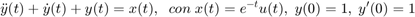
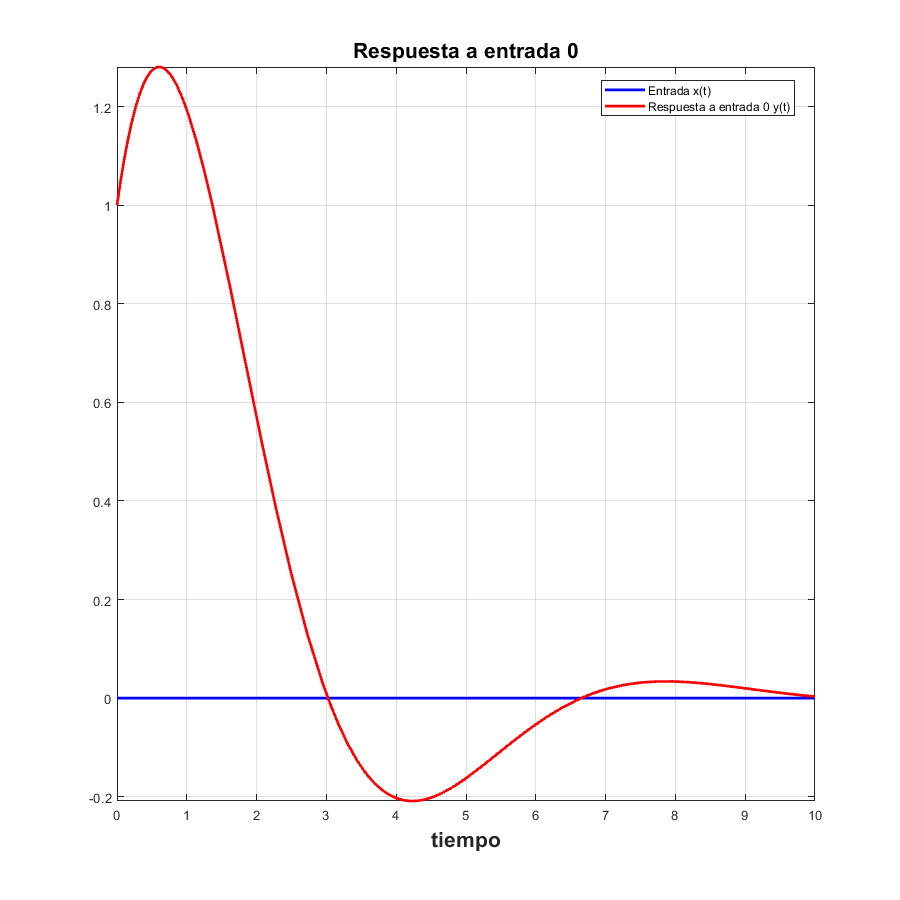
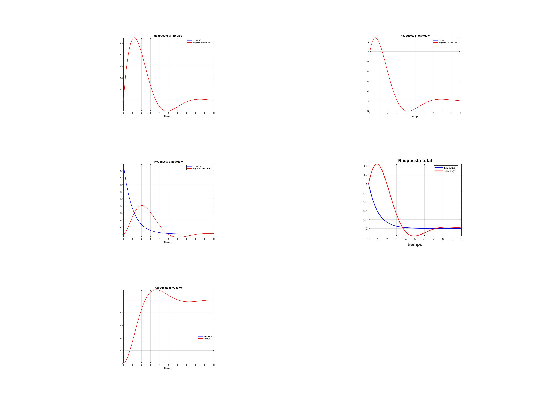
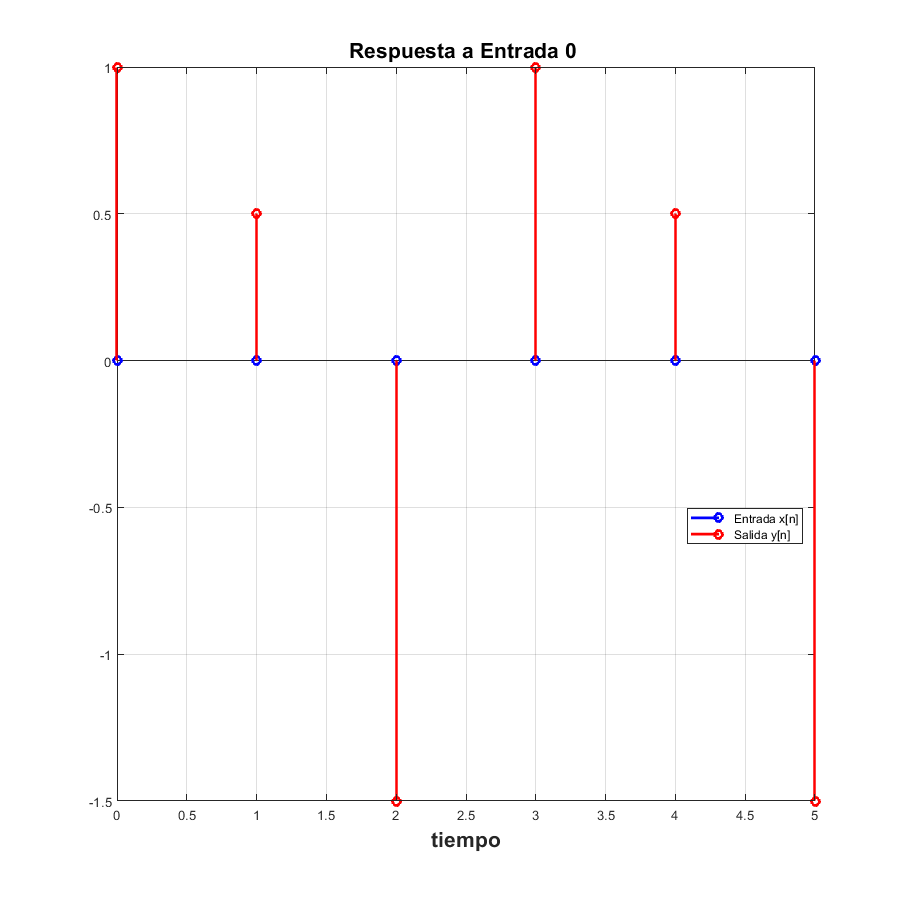

Práctica 6: Sistemas diferenciales y en diferencias
Contents
Sistemas Diferenciales
Ejercicio 1
Muestre la funcion de transferencia para el siguiente sistema diferencial.
syms t
transferenciaf([1 1 1],[1],[1,1],exp(-t)*heaviside(t),10)
Funcion de transferencia
1
----------
2
s + s + 1
El código de la función utilizada se puede consultar en: https://www.dropbox.com/s/lq25ym3cnasnqlz/transferenciaf.m?dl=0
Ejercicio 2
Muestre la respuesta al impulso del siguiente sistema diferencial.
syms t
respuestaimpulso([1 1 1],[1],[1,1],kroneckerDelta(t),10)
Funcion de transferencia
1
----------
2
s + s + 1
=
1
----------
2
s + s + 1
Aplicamos transformada inversa;La respuesta al impulso es
y(t)=
/ t \ / sqrt(3) t \
sqrt(3) exp| - - | sin| --------- | 2
\ 2 / \ 2 /
-------------------------------------
3
El código de la función utilizada se puede consultar en: https://www.dropbox.com/s/co733wm9wus1qjx/respuestaimpulso.m?dl=0
Ejercicio 3
Muestre la respuesta a entrada cero del siguiente sistema diferencial.
syms t
respuesta0([1 1 1],[1],[1,1],10)
Y(s)= s + 2 ---------- 2 s + s + 1 = s + 2 ---------- 2 s + s + 1 Aplicamos transformada inversa;La respuesta a entrada cero es y(t)= / t \ / / sqrt(3) t \ / sqrt(3) t \ \ exp| - - | | cos| --------- | + sqrt(3) sin| --------- | | \ 2 / \ \ 2 / \ 2 / /
El código de la función utilizada se puede consultar en: https://www.dropbox.com/s/r93mk2ti0zx9g8p/respuesta0.m?dl=0
Ejercicio 4
Muestre la respuesta a estado cero del siguiente sistema diferencial.
syms t
estado0([1 1 1],[1],exp(-t)*heaviside(t),10)
Y(s)=
1
--------------------
2
(s + 1) (s + s + 1)
=
1 s
----- - ----------
s + 1 2
s + s + 1
Aplicamos transforamda inversa;La respuesta a Estado cero es:
y(t)=
/ / sqrt(3) t \ \
| sqrt(3) sin| --------- | |
/ t \ | / sqrt(3) t \ \ 2 / |
exp(-t) - exp| - - | | cos| --------- | - ------------------------ |
\ 2 / \ \ 2 / 3 /
El código de la función utilizada se puede consultar en: https://www.dropbox.com/s/wvuccahj0pkoblz/estado0.m?dl=0
Ejercicio 5
Respuesta total (simbólico, gráfica) Para la ecuación:

sympref('HeavisideAtOrigin', 1); syms t resp_total([1 1 1],[1],[1,1],exp(-t)*heaviside(t),10)
2
Y(s) - s + s Y(s) + s Y(s) - 2
=
X(s)
2
Y(s) - s + s Y(s) + s Y(s) - 2
=
1
-----
s + 1
Y(s)=
1
s + ----- + 2
s + 1
-------------
2
s + s + 1
2 1
---------- + -----
2 s + 1
s + s + 1
La respuesta total es
y(t)=
/ t \ / sqrt(3) t \
sqrt(3) exp| - - | sin| --------- | 4
\ 2 / \ 2 /
exp(-t) + -------------------------------------
3
El código de la función utilizada se puede consultar en: https://www.dropbox.com/home/se%C3%B1ales?preview=resp_total.m
Ejercicio 6
Respuesta total al escalón con condiciones iniciales 0 (simbólico, gráfica) Para la ecuación:

sympref('HeavisideAtOrigin', 1); syms t resp_escalon([1 1 1],[1],[0,0],heaviside(t),10) % El código de la función utilizada se puede consultar en: % <https://www.dropbox.com/home/se%C3%B1ales?preview=resp_escalon.m>
2
Y(s) + s Y(s) + s Y(s)
=
X(s)
2
Y(s) + s Y(s) + s Y(s)
=
1
-
s
Y(s)=
1
--------------
2
s (s + s + 1)
1 s + 1
- - ----------
s 2
s + s + 1
La respuesta al escalón
y(t)=
/ / sqrt(3) t \ \
| sqrt(3) sin| --------- | |
/ t \ | / sqrt(3) t \ \ 2 / |
1 - exp| - - | | cos| --------- | + ------------------------ |
\ 2 / \ \ 2 / 3 /
 Ejercicio 7
Usando subplot, despliega una figura con 5 gráficas
figure subplot(3,2,1) imshow('respuestaimpulso.jpg') subplot(3,2,2) imshow('respuesta0.jpg') subplot(3,2,3) imshow('estado0.jpg') subplot(3,2,4) imshow('resp_total.jpg') subplot(3,2,5) imshow('resp_escalon.jpg')

Sistemas en diferencias
Ejercicio 1
Programa que muestra la función de transferencia del sistema
Con condiciones iniciales
, ![$y[1]=0.5$](ASySPrac6ReneMonroy_eq10783038759891113815.png)
syms n fztransferencia([1 1 1],[1],[0.5 1],[1],(0.5)^(n)*heaviside(n)) % El código de la función utilizada se puede consultar en: % <https://www.dropbox.com/home/se%C3%B1ales?preview=fztransferencia.m>
H(z)=
2
4 z + 4 z + 4
--------------
2
(2 z + 1)
Ejercicio 2
Respuesta al impulso (simbólico, gráfica) Para la ecuación:
como la ecuación esá en formato de atraso, la cambiamos a formato de adelanto para que haya consistencia con el programa realizado,quedando de la siguiente forma
como la ecuación esá en formato de atraso, la cambiamos a formato de adelanto para que haya consistencia con el programa realizado,quedando de la siguiente forma: las condiciones iniciales deben de ser 0
syms n Kronecker([1 1 1],[1 0],[0.5 1],[1],kroneckerDelta(n),5) % El código de la función utilizada se puede consultar en: % <https://www.dropbox.com/home/se%C3%B1ales?preview=Kronecker.m>
Y(z)=
La respuesta al impulso es
y(n)=
n / 1 sqrt(3) 1i \n - 1
(-1) sqrt(3) | - - ---------- | 2i
n / pi n \ \ 2 2 /
- (-1) cos| ---- | - ----------------------------------------
\ 3 / 3
n / sqrt(3) 1i 1 \n - 1
(-1) sqrt(3) | ---------- + - | 2i
\ 2 2 /
+ ----------------------------------------
3

Ejercicio 3
Determina la respuesta a entrada cero del siguiente sistema
Con condiciones iniciales
,
sympref('HeavisideAtOrigin',1) syms n; ent0([1,1,1],[1,0,0],[0.5,1],[0,0],0*heaviside(n),5)
ans =
1
La Respuesta a entrada 0 es
y(n)=
n / 1 sqrt(3) 1i \n - 1
(-1) sqrt(3) | - - ---------- | 2i
n / pi n \ \ 2 2 /
- (-1) cos| ---- | - ----------------------------------------
\ 3 / 3
n / sqrt(3) 1i 1 \n - 1
(-1) sqrt(3) | ---------- + - | 2i
\ 2 2 /
+ ----------------------------------------
3
El código de la función utilizada se puede consultar en https://www.dropbox.com/s/zjyewsmb9aw9wxt/ent0.m?dl=0
Ejercicio 4
Determina la resouesta a estado cero del siguiente sistema
Con entrada
![$x[n]=(0.5)^{n}u[n]$](ASySPrac6ReneMonroy_eq07641524355348424264.png)
sympref('HeavisideAtOrigin',1) syms n; ci0([1,1,1],[1,0,0],[0,0],[0.5,1],((0.5)^n)*heaviside(n),5)
ans =
1
La Respuesta a estado 0 es
y(n)=
n / pi n \ / 1 \n n / 1 \n - 1
(-1) cos| ---- | | - | (-1) sqrt(3) | - - #1 | 2i
\ 3 / \ 2 / \ 2 /
----------------- + ------ + --------------------------------
7 7 21
n / 1 \n - 1
(-1) sqrt(3) | #1 + - | 2i
\ 2 /
- --------------------------------
21
where
sqrt(3) 1i
#1 == ----------
2
 El código de la función utilizada se puede consultar en https://www.dropbox.com/s/yaxsj8rflrqlwjc/ci0.m?dl=0
Ejercicio 5
Determine la respuesta total del sistema
Con entrada
Y condiciones iniciales
,
sympref('HeavisideAtOrigin',1) syms n; RT([1,1,1],[1,0,0],[0.5,1],[0.5,1],((0.5)^n)*heaviside(n),5)
ans =
1
La Respuesta Total es
y(n)=
/ 1 \n n / pi n \ n / 1 \n - 1
| - | (-1) cos| ---- | 6 (-1) sqrt(3) | - - #1 | 4i
\ 2 / \ 3 / \ 2 /
------ - ------------------- - --------------------------------
7 7 7
n / 1 \n - 1
(-1) sqrt(3) | #1 + - | 4i
\ 2 /
+ --------------------------------
7
where
sqrt(3) 1i
#1 == ----------
2
El código de la función utilizada se puede consultar en https://www.dropbox.com/s/y5agbjjsfn974ho/RT.m?dl=0
Ejercicio 6
Determine la respuesta total del sistema
Con entrada
![$x[n]=u[n]$](ASySPrac6ReneMonroy_eq14368982306075698669.png)
Y condiciones iniciales
![$y[0]=0$](ASySPrac6ReneMonroy_eq12019896080368178577.png) ,
, ![$y[1]=0$](ASySPrac6ReneMonroy_eq05774860694486457594.png)
sympref('HeavisideAtOrigin',1) syms n; RT([1,1,1],[1,0,0],[0,0],[0.5,1],heaviside(n),10)
ans =
1
La Respuesta Total es
y(n)=
n / pi n \
(-1) cos| ---- |
1 \ 3 /
- - -----------------
3 3
 El código de la función utilizada se puede consultar en https://www.dropbox.com/s/y5agbjjsfn974ho/RT.m?dl=0
Ejercicio 7
figure subplot(3,2,1) imshow('ent0.jpg') subplot(3,2,2) imshow('ci0.jpg') subplot(3,2,3) imshow('RT.jpg') subplot(3,2,4) imshow('esc.jpg')
Error using images.internal.getImageFromFile (line 11)
Cannot find the specified file: "ent0.jpg".
Error in images.internal.imageDisplayParseInputs (line 74)
images.internal.getImageFromFile(common_args.Filename);
Error in imshow (line 241)
images.internal.imageDisplayParseInputs({'Parent','Border','Reduce'},preparsed_varargin{:});
Error in ASySPrac6ReneMonroy (line 224)
imshow('ent0.jpg')